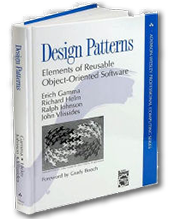

The solution is reusable and can be used to solve similar problems. In this article we are going to focus on design patterns focused on video game programming.
Some history
Design patterns emerge from the world of architecture when in 1979 architect and mathematician, Christopher Alexander publishes the book ‘The Timeless Way of Building’. In the author’s words:
Each pattern describes a problem that occurs an infinite number of times in our environment, as well as the solution to it, so that we can use this solution a million times later without having to rethink it again.
Inspired by the ancient medieval cities, he published with other colleagues his next book ‘A Pattern Language’, where he formalizes the idea of a design pattern as a solution to a problem within a given context.
It describes methods for creating practical, safe and attractive designs regardless of the scale at which one works. Its principles are still used as building code in many cities.
The leap into the programming world occurred in 1987 when Ward Cunningham and Kent Beck found parallels in Alexander’s work and what a good architecture based on object-oriented should be. They developed five patterns and published a paper at the OOPSLA conference in the same year under the name ‘Using Pattern Languages for OO Programs’.
But it was not until 1994 with the publication of the famous ‘Design Patterns: Elements of Reusable Object-Oriented Software’ by the group called ‘Gang of Four’ (or simply ‘GoF’) that the term and its use became popular. It sold over 500,000 copies in English and was translated into 13 other languages.
In the book the authors lay the foundations of what we understand today as a design pattern and compile the first 23 patterns. Since then their number has continued to grow.
Why use them?
Because they can help us create robust software that is easy to understand and modify. In addition, it can provide you with a common vocabulary for planning or solving problems with other programmers.
Let’s imagine you want to make toys out of plastic parts. You could make a mold for each new toy you need, but these toys could not be easily modified and you would not take advantage of any of the old molds.
Instead of building molds of complete toys, we could make molds of smaller pieces and build the toys with these blocks. In addition to being able to reuse them for other toys, owners could modify them and use blocks from other toys to build their own.
But toys built with only basic blocks would look very crude and unoriginal. The same goes for software, not everything can be made from patterns, but you can use them as a solid and reliable base.
From them you can add the blocks you need to make your game a true work of art of software architecture ;).
Types of patterns
In this article we are going to analyze some design patterns specially useful for game development, specifically we will use C# as language and Unity as 3D engine.
The patterns we will see can be classified according to their purpose or level of abstraction in three groups:
- Builders, patterns that create instances.
- Singleton, guarantees that only a single instance of the class exists and provides global access to that instance.
- Structural, composition of classes and objects.
- Behavior, define interactions and responsibilities between classes and objects.
Singleton
The first design pattern we are going to see is possibly the most controversial and most/misused of all. Its simplicity when implementing it and its ease of use make it the design pattern that is usually learned first and, in some cases, the only pattern that many programmers know.
The Singleton pattern can be summarized as:
Only have one instance and provide a single global access to it.
Ensuring that only one instance of a class exists means that only one copy of a class type will exist at a time, it would not allow us to create a second copy of that class. In addition, anyone will be able to access it. This last characteristic is what gives it its bad reputation, since it is not usually recommended to have objects with global access.
In the development of video games they are usually used mainly in the so-called managers, objects with a well-defined and limited purpose that records and/or modifies information or states of the same type.
For example, a class that is in charge of playing audio and modifying the volume can be an audio manager. Unity is literally riddled with these managers, such as Input, Debug, etc.
A simple example of a singleton can be:
public class LazySingleton
{
// Static variable that references the only instance of Singleton.
private static LazySingleton instance = null;
// Requests the single instance.
public static LazySingleton Instance
{
get
{
// If it does not exist, it is created.
if (instance == null)
instance = new LazySingleton();
return instance;
}
}
public void DoSomething() { }
// Private constructor so no one external to this class will be able to create one, and without parameters.
private LazySingleton() { }
}If someone wants to execute the DoSomething function of Singleton just do:
Singleton.Instance.DoSomething();The single instance of Singleton will be created the first time Instance is called. This is called ‘lazy initialization’ and can generate several instances if different threads call Instance at the same time. To avoid this you can use a lock block, sacrificing some performance, like this:
public class ThreadSafeSingleton
{
// Static variable that references the single instance of ThreadSafeSingleton.
private static ThreadSafeSingleton instance = null;
// Object used in the lock.
private static object @lock = new object();
// Requests the single instance.
public static ThreadSafeSingleton Instance
{
get
{
lock (@lock)
{
// This code block is Thread-safe.
// If it does not exist, it is created.
if (instance == null)
instance = new ThreadSafeSingleton();
return instance;
}
}
}
public void DoSomething() { }
// Private constructor so no one external to this class will be able to create one, and without parameters.
private ThreadSafeSingleton() { }
}Another option may be to leave the task of creation to the CLR in this way:
public class Singleton
{
// It is executed once per app-domain, the CLR ensures that it is thread-safe.
private static readonly Singleton instance = new Singleton();
// Requests the single instance.
public static Singleton Instance => instance;
public void DoSomething() { }
// Explicit static constructor to tell the compiler not to mark the type as beforefieldinit.
static Singleton() { }
// Private constructor so no one external to this class will be able to create one, and without parameters.
private Singleton() { }
}